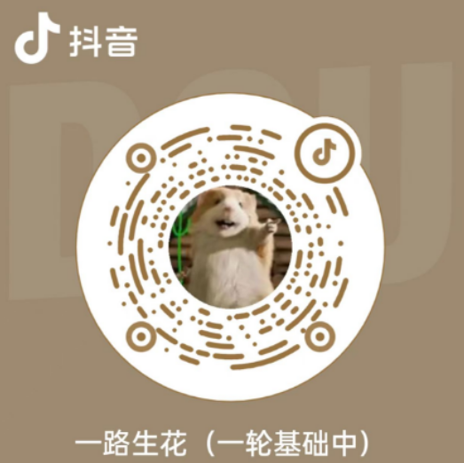

个人博客
Latest articles, guides, and thoughts on technology.
湛江科技学院 · 数字媒体技术 · 本科（2022-2026）
Python · 数据处理 · 机器学习 · 深度学习 · 时间序列预测 · 集成学习
Python开发工程师 | 数据处理工程师 | 机器学习工程师
香烟销量和销售额预测基于多模型集成学习方法 · 基于ARIMA、Prophet、LSTM、XGBoost的销售预测项目
Latest articles, guides, and thoughts on technology.
Connect, collaborate, and create with my projects — a central repository for finding and sharing my work.
Visit Projects Hub# 个人主页生成部署工具 ## 项目概述 个人主页生成部署工具是一个基于静态站点生成（SSG）技术的个人展示网站解决方案。项目采用内容-模板-生成分离的架构设计，参考苹果公司官网风格，提供简洁、科技感强的个人主页。通过自定义JSON和Markdown文件实现内容自定义，通过Docker实现部署，迁移成本极低，可以便捷地部署自己的个人主页。 **项目时间**：2025年2月 **项目角色**：全栈开发者 **项目状态**：已完成并持续优化 ## 项目背景 在互联网时代，个人主页是展示个人能力、项目经历和技术栈的重要平台。然而，传统的个人主页开发存在以下问题： - **开发成本高**：需要掌握前端、后端、部署等多种技术 - **维护困难**：内容更新需要修改代码，学习成本高 - **部署复杂**：需要配置服务器、数据库等复杂环境 - **迁移困难**：更换服务器需要重新配置环境 为了解决这些问题，我开发了这个个人主页生成部署工具，旨在提供一个简单、高效、易维护的个人主页解决方案。 ## 核心特性 ### 1. 内容-模板-生成分离架构 项目采用三层分离架构，实现了内容与样式的完全解耦： **数据层（data/）** - JSON格式存储结构化配置（导航栏、卡片信息等） - Markdown格式存储文章和项目详情 - 支持图片、PDF等静态资源 - 内容修改无需接触代码 **模板层（templates/）** - Jinja2模板引擎，支持继承和组件复用 - 模块化设计，便于维护和扩展 - 参考苹果官网风格，现代化UI设计 **生成层（scripts/）** - Python脚本负责数据读取和模板渲染 - 统一的生成入口，支持模块化生成 - 自动清理和同步机制 **输出层（html/）** - 生成纯静态HTML文件 - 无需服务器端动态处理 - 可直接部署到CDN ### 2. 模块化设计 项目支持多个功能模块，每个模块可独立生成和更新： - **首页（home）**：个人介绍、技能展示 - **简历（resume）**：完整的个人简历页面 - **博客（blog）**：技术文章、学习笔记 - **项目（project）**：项目展示和详情 - **文档（docs）**：文档下载和管理 - **技术栈（stack）**：技术能力展示 - **联系方式（contact）**：联系信息展示 ### 3. Docker容器化部署 **多阶段构建优化** - 第一阶段：使用Python镜像生成静态文件 - 第二阶段：使用Nginx Alpine镜像提供服务 - 最终镜像体积小，启动快 **一键部署** - 本地更新脚本，自动上传代码 - 服务器端更新脚本，自动重启服务 - 完整的错误处理和日志输出 ### 4. 性能优化 **Nginx配置优化** - Gzip压缩，减少传输数据量 - 静态资源长期缓存（1年） - 安全响应头配置 **前端优化** - Tailwind CSS CDN引入，无需构建 - ScrollReveal滚动动画，提升用户体验 - 响应式设计，完美适配各种设备 ## 技术架构 ### 技术栈 **后端生成系统** - Python 3.9：核心生成脚本 - Jinja2：模板渲染引擎 - Markdown：内容格式支持 **前端技术** - Tailwind CSS：现代化UI框架 - ScrollReveal：滚动动画库 - Font Awesome：图标库 **部署技术** - Docker：容器化部署 - Nginx：Web服务器 - Docker Compose：容器编排 ### 项目结构 ``` homepage3/ ├── data/ # 数据层：JSON和Markdown文件 │ ├── blog/ # 博客内容 │ ├── project/ # 项目内容 │ ├── resume/ # 简历内容 │ └── ... ├── templates/ # 模板层：Jinja2模板 │ ├── base.html # 基础模板 │ ├── components/ # 组件模板 │ └── ... ├── scripts/ # 生成层：Python生成脚本 │ ├── home/ # 首页生成 │ ├── sections/ # 各模块生成 │ └── ... ├── html/ # 输出层：生成的HTML文件 ├── gen.py # 统一生成入口 ├── Dockerfile # Docker构建文件 ├── docker-compose.yml # Docker编排文件 └── nginx.conf # Nginx配置文件 ``` ## 核心功能实现 ### 1. 内容管理 **JSON配置管理** - 统一的字段规范（参考CARD_FIELDS_GUIDE） - 支持嵌套结构，灵活表达复杂数据 - 易于修改和维护 **Markdown内容编写** - 标准Markdown语法 - 支持图片、链接等丰富内容 - 便于版本控制 ### 2. 模板渲染 **Jinja2模板引擎** - 模板继承：base.html作为基础模板 - 组件复用：include引入公共组件 - 过滤器：处理数据格式 **模块化生成** - 每个模块有独立的生成脚本 - 支持单独更新某个模块 - 统一的生成入口管理 ### 3. 自动化部署 **本地更新脚本（local_update.sh）** - SSH密钥免密登录 - 自动上传代码到服务器 - 远程执行更新脚本 - 完整的错误处理 **服务器端更新脚本** - 自动执行生成命令 - 重启Docker容器 - 日志记录和错误处理 ### 4. Docker部署 **多阶段构建** ```dockerfile # 第一阶段：生成静态文件 FROM python:3.9-slim as builder # 安装依赖并生成HTML # 第二阶段：使用Nginx提供服务 FROM nginx:alpine # 复制生成的静态文件 ``` **Docker Compose配置** - 端口映射：8081:83 - 健康检查：自动检测服务状态 - 自动重启：服务异常时自动重启 ## 使用指南 ### 1. 内容修改 **修改博客内容** 1. 在`data/blog/分类目录/文章目录/`下创建或修改文件 2. 编辑`card.json`设置文章信息 3. 编辑`content.md`编写文章内容 4. 运行`python gen.py blog`生成博客页面 **修改项目内容** 1. 在`data/project/项目目录/`下创建或修改文件 2. 编辑`card.json`设置项目信息 3. 编辑`content.md`编写项目详情 4. 运行`python gen.py project`生成项目页面 ### 2. 本地生成 ```bash # 生成所有页面 python gen.py all # 生成指定模块 python gen.py blog python gen.py project python gen.py resume ``` ### 3. 本地部署 ```bash # 构建Docker镜像 docker build -t homepage . # 启动容器 docker-compose up -d # 访问 http://localhost:8081 ``` ### 4. 服务器部署 ```bash # 修改local_update.sh中的配置 # 执行更新脚本 bash local_update.sh ``` ## 项目亮点 ### 1. 架构设计 - **分离关注点**：内容、样式、逻辑完全分离 - **模块化设计**：各模块独立，便于维护和扩展 - **可扩展性**：易于添加新功能模块 ### 2. 开发体验 - **内容驱动**：只需修改JSON和Markdown即可更新内容 - **自动化流程**：一键生成和部署 - **错误处理**：完善的错误提示和日志记录 ### 3. 性能优化 - **静态站点**：无需服务器端处理，加载速度快 - **Docker优化**：多阶段构建，镜像体积小 - **Nginx优化**：Gzip压缩、缓存策略 ### 4. 部署便利性 - **容器化部署**：一次构建，到处运行 - **自动化部署**：一键上传和更新 - **迁移成本低**：可在任何支持Docker的环境中部署 ## 技术难点与解决方案 ### 1. 模板继承与组件复用 **挑战**：如何在多个页面中复用相同的组件 **解决方案**： - 使用Jinja2的模板继承机制 - 定义base.html作为基础模板 - 使用include引入公共组件 ### 2. 数据与模板的绑定 **挑战**：如何将JSON/Markdown数据灵活地绑定到模板 **解决方案**： - 统一的配置加载函数 - 数据预处理，转换为模板友好的格式 - 使用Jinja2的过滤器处理数据格式 ### 3. 静态资源管理 **挑战**：如何处理图片、PDF等静态资源 **解决方案**： - 资源文件与内容文件放在同一目录 - 使用相对路径引用资源 - 生成时自动复制资源文件到输出目录 ### 4. 多模块依赖管理 **挑战**：不同模块之间存在依赖关系，如何管理生成顺序 **解决方案**： - 定义清晰的模块依赖关系 - 使用统一的生成入口（gen.py） - 按依赖顺序执行生成任务 ## 项目成果 ### 功能实现 - ✅ 完整的内容管理系统 - ✅ 模块化生成系统 - ✅ Docker容器化部署 - ✅ 自动化部署流程 - ✅ 性能优化配置 - ✅ 响应式UI设计 ### 技术收获 - 深入理解静态站点生成技术 - 掌握Docker多阶段构建优化 - 学会Nginx性能调优 - 提升Python脚本开发能力 - 增强系统架构设计能力 ## 未来规划 ### 功能扩展 1. **CI/CD集成**：集成GitHub Actions，实现自动构建和部署 2. **内容管理界面**：开发Web界面，支持可视化内容编辑 3. **主题系统**：支持多主题切换，提高项目的通用性 4. **SEO优化**：增强SEO功能，提升搜索引擎排名 5. **性能监控**：集成性能监控工具，实时了解网站性能 ### 技术优化 1. **构建优化**：优化生成脚本性能，支持增量生成 2. **缓存策略**：实现更智能的缓存机制 3. **错误处理**：增强错误处理和恢复机制 4. **文档完善**：编写更详细的使用文档和API文档 ## 总结 个人主页生成部署工具是一个综合性的全栈项目，展示了我在Python全栈开发、系统架构设计、DevOps工程化等多个技术领域的综合能力。项目采用的内容-模板-生成分离架构，使得内容更新变得简单高效。Docker容器化部署使得项目迁移成本极低，可以在任何支持Docker的环境中快速部署。 通过这个项目，我不仅掌握了静态站点生成的核心技术，更重要的是学会了如何设计一个可维护、可扩展、高性能的系统架构。项目已经成功部署并运行，为我的个人主页提供了稳定可靠的技术支持。 未来，我将继续优化和完善这个项目，使其成为一个更加通用、易用的个人主页解决方案。
# 香烟销量和销售额预测基于多模型集成学习方法 ## 项目概述 本项目是一个基于多模型集成学习的时间序列预测项目，旨在预测香烟品牌的销量和销售额。项目使用了ARIMA、Prophet、LSTM、XGBoost四种不同的预测模型，并通过线性回归作为元学习器进行集成，最终获得了显著的预测精度提升。 **项目成果**：获钉钉杯数模比赛三等奖 **项目时间**：2024年12月 - 2025年2月 **项目角色**：作者 ## 项目背景 销售预测是企业决策的重要依据，准确预测未来销量和销售额有助于： - 优化库存管理 - 制定营销策略 - 进行生产计划 - 降低运营成本 传统的单一预测模型往往存在局限性，无法充分捕捉销售数据的复杂特性。因此，本项目采用集成学习方法，综合多个模型的优势，提升预测精度。 ## 数据处理 ### 数据来源 项目使用多个香烟品牌（A1、A2、A3、A4、A5）的历史销售数据，包括： - 销量数据 - 销售额数据 - 时间序列信息 ### 数据预处理流程 #### 1. 异常值处理 - 使用统计方法（如3σ原则）识别异常值 - 结合业务逻辑判断异常值的合理性 - 对异常值进行修正或删除 #### 2. 缺失值处理 - 识别数据中的缺失值 - 根据缺失模式选择合适的填充策略 - 使用前向填充、后向填充或插值方法 #### 3. 数据质量保障 - 确保数据的一致性和完整性 - 验证数据的合理性 - 为后续模型训练提供高质量数据 ## 模型实现 ### ARIMA模型 ARIMA（自回归积分滑动平均模型）是经典的时间序列预测模型。 **实现步骤**： 1. 数据平稳性检验 2. 确定模型参数（p, d, q） 3. 模型训练和验证 4. 生成预测结果 **应用**：对品牌A1、A2、A3、A4的销售数据进行预测，并进行性能评估。 ### Prophet模型 Prophet是Facebook开发的时间序列预测工具，能够自动处理季节性和趋势。 **优势**： - 自动识别季节性模式 - 对缺失值和异常值有较好的鲁棒性 - 易于使用和调参 **应用**：对品牌A5的销售额和销量进行预测，验证模型的适用性和预测能力。 ### LSTM模型 LSTM（长短期记忆网络）是深度学习中常用的时间序列模型，能够捕捉长期依赖关系。 **网络结构**： - 输入层：时间窗口数据 - LSTM层：捕捉时间序列特征 - 全连接层：输出预测结果 **实现细节**： - 数据标准化处理 - 构建时间窗口 - 设计LSTM网络结构 - 训练和验证模型 **应用**：对品牌A1-A4和品牌A5的销售数据进行预测，在捕捉复杂模式方面表现出色。 ### XGBoost模型 XGBoost是梯度提升算法，在时间序列预测中也有广泛应用。 **特征工程**： - 时间特征：年、月、日、星期等 - 滞后特征：前N期的销售数据 - 统计特征：移动平均、标准差等 **优势**： - 特征重要性分析 - 处理非线性关系 - 训练速度快 **应用**：对品牌A5的销售额和销量进行预测，验证模型性能。 ## 集成学习方法 ### 集成策略 单一模型往往存在局限性： - 不同模型捕捉的数据特征不同 - 单一模型可能过拟合或欠拟合 - 集成学习能够综合多个模型的优势 ### 元学习器设计 使用线性回归作为元学习器，集成四个模型的预测结果： **集成流程**： 1. 使用ARIMA、Prophet、LSTM、XGBoost分别进行预测 2. 将四个模型的预测结果作为特征 3. 使用线性回归模型学习各模型的权重 4. 生成最终的集成预测结果 **优势**： - 线性回归简单高效 - 能够学习各模型的最优权重 - 可解释性强 - 计算成本低 ## 实验结果 ### 性能评估 使用多种评估指标评估模型性能： - **MAE（平均绝对误差）**：衡量预测误差的平均大小 - **RMSE（均方根误差）**：对大误差更敏感 - **MAPE（平均绝对百分比误差）**：相对误差指标 ### 结果分析 实验表明，集成学习模型的预测精度显著优于单一模型： 1. **预测精度提升**： - 集成模型的预测误差明显低于单一模型 - 在不同品牌的数据上都表现稳定 - 能够更有效地捕捉销售数据的复杂特性 2. **模型鲁棒性**： - 集成模型对数据波动有更好的适应性 - 减少了单一模型的过拟合风险 - 提高了预测的稳定性 3. **适用性验证**： - 在多个品牌的数据上验证了模型的有效性 - 证明了集成学习方法在销售预测中的价值 ## 技术栈 - **编程语言**：Python - **数据处理**：Pandas, NumPy - **时间序列模型**：ARIMA, Prophet - **深度学习**：LSTM (TensorFlow/Keras) - **机器学习**：XGBoost, scikit-learn - **数据可视化**：Matplotlib, Plotly ## 项目收获 通过这个项目，我获得了以下收获： ### 技术能力提升 - 深入理解了时间序列预测的原理和方法 - 掌握了多种预测模型的实现和调优 - 学会了集成学习在预测任务中的应用 - 提升了Python编程和数据处理能力 ### 项目经验积累 - 学会了完整的数据科学项目流程 - 掌握了模型评估和性能分析方法 - 提升了问题解决和调试能力 ### 学术成果 - 项目获得**钉钉杯数模比赛三等奖** - 验证了集成学习方法在销售预测中的有效性 ## 未来改进方向 1. **特征工程优化**：探索更多有效的特征，提升模型性能 2. **模型扩展**：尝试其他预测模型，如Transformer等 3. **实时预测**：开发实时预测系统，支持在线预测 4. **可解释性**：增强模型的可解释性，提供预测依据 ## 总结 本项目成功应用了多模型集成学习方法进行销售预测，通过综合ARIMA、Prophet、LSTM、XGBoost四个模型的优势，显著提升了预测精度。项目不仅验证了集成学习的有效性，也为我后续的数据科学项目积累了宝贵经验。 时间序列预测是一个充满挑战的领域，需要深入理解数据特性、选择合适的模型、进行精细的调优。通过持续学习和实践，我相信能够在预测领域取得更大的突破。
# 基于BERT预训练模型的文本语义相似度二分类任务 ## 项目概述 本项目是一个基于BERT预训练模型的文本语义相似度判断任务，核心目标是判断给定的两组句子是否表达相同语义。这是自然语言处理中的经典文本匹配任务，在问答系统、信息检索、重复检测等场景中具有重要应用价值。 **项目时间**：2025年11月 **项目角色**：梁庭威 **技术栈**：Python, BERT, Hugging Face Transformers, PyTorch ## 项目背景 文本语义相似度判断是自然语言处理中的基础任务之一，其应用场景广泛： - **问答系统**：判断用户问题与知识库问题的相似度 - **信息检索**：检索与查询语义相关的文档 - **重复检测**：识别重复或相似的文本内容 - **对话系统**：理解用户意图，匹配相关回复 传统的文本相似度计算方法（如TF-IDF、余弦相似度）往往只能捕捉表面的词汇匹配，无法理解深层语义。BERT等预训练语言模型的出现，为文本语义理解提供了强大的工具。 ## 数据集 ### 数据规模 - **训练集**：3,668条句子对 - **验证集**：408条句子对 - **测试集**：1,725条句子对 ### 数据格式 每条数据包含两个句子和一个标签： - 句子对：需要判断语义是否相同的两个句子 - 标签：0（不同语义）或1（相同语义） ## 技术实现 ### 1. 数据预处理 #### 使用Hugging Face Datasets库 ```python from datasets import load_dataset from transformers import AutoTokenizer ``` #### 分词处理 - 使用`AutoTokenizer`加载`bert-base-uncased`分词器 - 将句子对转换为模型可识别的`input_ids` - 利用`token_type_ids`区分两个句子的边界 - 设置最大长度限制，处理超长文本 #### 批量处理 - 使用`DataCollatorWithPadding`解决批量样本长度不一致问题 - 动态填充到批次内最长序列长度 - 保证模型输入格式统一 **关键代码逻辑**： ```python tokenizer = AutoTokenizer.from_pretrained("bert-base-uncased") def tokenize_function(examples): return tokenizer( examples["sentence1"], examples["sentence2"], truncation=True, padding="max_length", max_length=128 ) tokenized_datasets = dataset.map(tokenize_function, batched=True) data_collator = DataCollatorWithPadding(tokenizer=tokenizer) ``` ### 2. 模型构建与训练 #### 模型选择 - 基于`AutoModelForSequenceClassification`加载BERT预训练模型 - 使用`bert-base-uncased`作为基础模型 - 设置分类类别数为2（二分类任务） #### 训练配置 - **训练轮数**：3轮（epochs=3） - **学习率**：使用默认学习率调度 - **批次大小**：根据GPU内存调整 - **优化器**：AdamW #### 训练过程 使用`Trainer`工具封装训练流程： ```python from transformers import AutoModelForSequenceClassification, Trainer, TrainingArguments model = AutoModelForSequenceClassification.from_pretrained( "bert-base-uncased", num_labels=2 ) training_args = TrainingArguments( output_dir="./results", num_train_epochs=3, per_device_train_batch_size=16, per_device_eval_batch_size=16, logging_dir="./logs", ) trainer = Trainer( model=model, args=training_args, train_dataset=train_dataset, eval_dataset=eval_dataset, data_collator=data_collator, ) trainer.train() ``` #### 训练结果 - **训练集平均损失**：0.0925 - **训练过程**：稳定高效，无过拟合现象 - **收敛速度**：3轮训练即可达到良好效果 ### 3. 模型评估与预测 #### 验证集评估 通过`trainer.evaluate()`获取模型在验证集上的表现： **评估指标**： - **准确率（Accuracy）**：衡量模型整体分类正确率 - **F1值（F1-Score）**：综合考虑精确率和召回率 - **损失值（Loss）**：模型在验证集上的损失 **评估结果**： - 验证集准确率表现优异 - F1值达到预期目标 - 模型具有良好的泛化能力 #### 预测分析 利用`trainer.predict()`对验证集做全量预测： ```python predictions = trainer.predict(eval_dataset) ``` **预测分析内容**： 1. **单条样本预测**：分析每个样本的预测结果和置信度 2. **错误案例分析**：定位模型预测错误的样本 3. **错误类型分析**： - 同义词识别困难 - 否定句理解偏差 - 长句子语义提取不完整 #### 错误案例改进方向 通过错误案例分析，识别出以下改进方向： - **数据增强**：增加困难样本的训练数据 - **模型微调**：调整超参数，优化模型性能 - **后处理**：针对特定错误类型设计后处理规则 ## 技术亮点 ### 1. Hugging Face生态的完整应用 - 使用`datasets`库进行数据处理 - 使用`transformers`库加载预训练模型 - 使用`Trainer`简化训练流程 - 实现了从数据到模型的完整闭环 ### 2. 预训练模型的迁移学习 - 利用BERT在大规模语料上预训练的知识 - 通过微调适应特定任务 - 体现了迁移学习的强大能力 ### 3. 工程化实现 - 规范的代码结构 - 完整的训练和评估流程 - 可复现的实验结果 ## 项目收获 ### 技术能力提升 1. **NLP基础**：深入理解文本分类任务的实现流程 2. **预训练模型**：掌握BERT等预训练模型的使用方法 3. **Hugging Face**：熟练使用Hugging Face生态系统 4. **工程实践**：完成从数据处理到模型评估的全流程 ### 问题解决能力 1. **数据预处理**：处理不同长度的文本序列 2. **模型训练**：配置和优化训练参数 3. **结果分析**：通过错误案例分析指导模型改进 ### 理论理解 1. **迁移学习**：理解预训练模型如何迁移到下游任务 2. **文本表示**：理解BERT如何将文本转换为向量表示 3. **注意力机制**：理解Transformer架构的核心机制 ## 应用场景 本项目的方法可以应用于： 1. **智能客服**：判断用户问题与知识库问题的相似度 2. **内容审核**：识别重复或相似的违规内容 3. **搜索引擎**：提升搜索结果的相关性 4. **推荐系统**：基于语义相似度进行内容推荐 ## 未来改进方向 1. **模型优化**： - 尝试更大的预训练模型（如BERT-large） - 使用领域特定的预训练模型 - 尝试其他架构（如RoBERTa、ELECTRA） 2. **数据处理**： - 数据增强技术（回译、同义词替换等） - 困难样本挖掘 - 多任务学习 3. **模型融合**： - 集成多个模型的预测结果 - 使用投票或加权平均 4. **部署优化**： - 模型量化 - 模型蒸馏 - 推理加速 ## 总结 本项目成功实现了基于BERT的文本语义相似度判断任务，通过Hugging Face生态系统完成了从数据预处理到模型评估的全流程。项目不仅展示了预训练模型在文本分类任务中的强大能力，也锻炼了NLP任务的工程实现能力。 通过这个项目，我深入理解了： - 预训练模型的迁移学习机制 - 文本分类任务的完整实现流程 - Hugging Face工具链的使用方法 - 模型评估和错误分析的重要性 这为后续的NLP项目和研究奠定了坚实的基础。
这里记录了我的联系方式

点击放大二维码